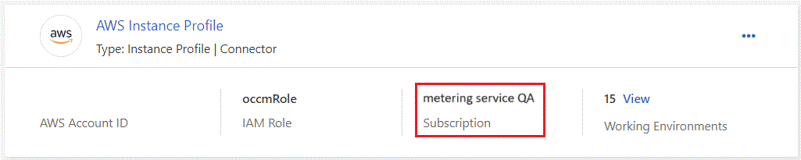
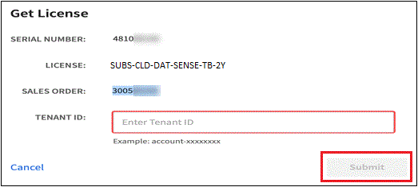
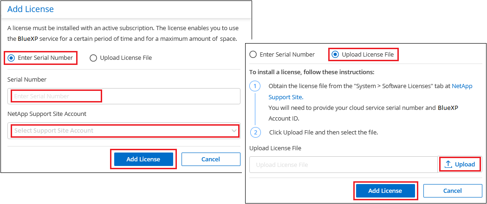

Notas de la versión
Notas de la versión
Configura las licencias para la clasificación de BlueXP
 Sugerir cambios
Sugerir cambios
Los primeros 1 TB de datos que analiza la clasificación de BlueXP en un espacio de trabajo de BlueXP son gratis durante 30 días. Debe seguir analizando los datos después de ese momento una licencia BYOL de NetApp o una suscripción al mercado de su proveedor de cloud.
Antes de leer más:
-
Si ya te has suscrito a la suscripción de pago por uso (PAYGO) de BlueXP en el mercado de tu proveedor de cloud, también te suscribirás automáticamente a la clasificación de BlueXP. No tendrá que volver a suscribirse.
-
La clasificación BYOL (bring-your-own-license) de BlueXP (Data Sense) es una licencia flotante que puedes utilizar en todos los entornos de trabajo y orígenes de datos del espacio de trabajo que planeas analizar. Verás una suscripción activa en la cartera digital de BlueXP.
-
La cantidad de datos que se analizan se calcula en función del tamaño lógico de archivo, sin ninguna eficiencia del almacenamiento.
prueba gratuita de 30 días
Está disponible una prueba gratuita de 30 días para hasta 1 TB de datos que analiza la clasificación de BlueXP en un espacio de trabajo de BlueXP. Tendrá que comprar una licencia BYOL de NetApp o un registro para obtener una suscripción desde el mercado del proveedor de cloud para seguir escaneando los datos después de ese momento.
Puede suscribirse en cualquier momento y no se le cobrará hasta que finalice la prueba de 30 días o la cantidad de datos supere 1 TB. Siempre puedes ver la cantidad total de datos que se analizan en el Panel de gobernanza de clasificación de BlueXP. Y el botón Subscribe Now facilita la suscripción cuando esté listo.

Usa una suscripción PAYGO de clasificación de BlueXP
Las suscripciones de pago por uso desde el mercado de su proveedor de cloud permiten utilizar las licencias para usar los sistemas Cloud Volumes ONTAP y muchos servicios BlueXP, como la clasificación de BlueXP. Pagarás a tu proveedor de nube por la cantidad de datos que se analiza la clasificación de BlueXP por horas con una única suscripción.
La suscripción garantiza que no se produzca ninguna interrupción en el servicio una vez que finalice la prueba gratuita. Cuando finalice la prueba, se le cobrará cada hora según la cantidad de datos que esté escaneando. No se le cobrará por su suscripción durante su prueba gratuita.
Un usuario que tenga la función Account Admin debe completar estos pasos.
-
En la parte superior derecha de la consola de BlueXP, haga clic en el icono Configuración y seleccione credenciales.

-
Haga clic en Credenciales y, a continuación, busque las credenciales para el perfil de instancia de AWS, la identidad de servicio gestionado de Azure o Google Project.
La suscripción se debe agregar al perfil de instancia, la identidad de servicio gestionado o Google Project. La carga no funcionará de otro modo.
Si ya tienes una suscripción a BlueXP (como se muestra a continuación para AWS), entonces ya estás todo listo: No hay nada más que tengas que hacer.

-
Si aún no tienes una suscripción, haz clic en el menú de acciones y haz clic en Suscripción asociada.

-
Seleccione una suscripción existente y haga clic en asociado, o haga clic en Agregar suscripción y siga los pasos.
El siguiente vídeo muestra cómo asociar un "Mercado AWS" Suscripción a una suscripción a AWS:
El siguiente vídeo muestra cómo asociar un "Azure Marketplace" Suscripción a una suscripción de Azure:
El siguiente vídeo muestra cómo asociar un "Google Cloud Marketplace" Suscripción a una suscripción a GCP:
Utilizar un contrato anual
Paga por la clasificación BlueXP cada año comprando un contrato anual. Están disponibles en plazos de 1, 2 o 3 años.
Si tienes un contrato anual en un mercado, todo el análisis de datos de clasificación de BlueXP se cobrará en función de ese contrato. No se puede mezclar y combinar un contrato anual de mercado con una licencia propia.
-
AWS: "Vaya a la oferta de BlueXP Marketplace para obtener información sobre precios".
-
Azure: "Vaya a la oferta de BlueXP Marketplace para obtener información sobre precios".
-
Google Cloud: Póngase en contacto con su representante de ventas de NetApp para adquirir un contrato anual. El contrato está disponible como oferta privada en Google Cloud Marketplace. Después de que NetApp comparta la oferta privada contigo, puedes seleccionar el plan anual al suscribirte en el mercado de Google Cloud durante la activación de la clasificación de BlueXP.
Utiliza una licencia BYOL de clasificación de BlueXP
Las licencias que traiga sus propias de NetApp proporcionan períodos de 1, 2 o 3 años. La licencia de clasificación BYOL BlueXP (Data Sense) es una licencia flotante donde la capacidad total se comparte entre todos de tus entornos de trabajo y orígenes de datos, lo que facilita la renovación y la licencia iniciales.
Si no tienes una licencia de clasificación de BlueXP, ponte en contacto con nosotros para comprar una:
-
Mailto:ng-contact-data-sense@netapp.com?Subject=Licensing[Enviar correo electrónico para adquirir una licencia].
-
Haga clic en el icono de chat situado en la parte inferior derecha de BlueXP para solicitar una licencia.
Opcionalmente, si tiene una licencia basada en nodos sin asignar para Cloud Volumes ONTAP que no utilizará, puede convertirla en una licencia de clasificación de BlueXP que tenga la misma equivalencia de dólar y la misma fecha de caducidad. "Vaya aquí para obtener más información".
Utilizarás la cartera digital de BlueXP para gestionar las licencias de BYOL para la clasificación de BlueXP. Puedes añadir nuevas licencias, actualizar las licencias existentes y ver el estado de la licencia desde la cartera digital de BlueXP.
Obtenga el archivo de licencia de clasificación de BlueXP
Después de comprar tu licencia de clasificación de BlueXP (Data Sense), activa la licencia en BlueXP introduciendo el número de serie de la clasificación de BlueXP y la cuenta del sitio de soporte de NetApp (NSS) o cargando el archivo de licencia de NetApp (NLF). Los pasos a continuación muestran cómo obtener el archivo de licencia de NLF si planea utilizar ese método.
Si has implementado la clasificación de BlueXP en un host de un sitio local que no tiene acceso a Internet, lo que significa que has implementado el conector de BlueXP en "modo privado", necesitará obtener el archivo de licencia de un sistema conectado a internet. La activación de la licencia mediante el número de serie y la cuenta NSS no está disponible para instalaciones de modo privado.
Antes de comenzar, necesitará tener la siguiente información:
-
Número de serie de clasificación de BlueXP
Busque este número en su pedido de ventas o póngase en contacto con el equipo de cuentas para obtener esta información.
-
ID de cuenta de BlueXP
Puede encontrar su ID de cuenta de BlueXP seleccionando el menú desplegable cuenta de la parte superior de BlueXP y, a continuación, haciendo clic en Administrar cuenta junto a su cuenta. Su ID de cuenta se encuentra en la ficha Descripción general. Para sitios de modo privado sin acceso a Internet, utilice CUENTA-DARKSITE1.
-
Inicie sesión en la "Sitio de soporte de NetApp" Y haga clic en sistemas > licencias de software.
-
Introduce el número de serie de la licencia de clasificación de BlueXP.

-
En la columna Clave de licencia, haz clic en Obtener archivo de licencia de NetApp.
-
Introduzca su ID de cuenta de BlueXP (esto se denomina ID de inquilino en el sitio de soporte) y haga clic en Enviar para descargar el archivo de licencia.

Añade licencias BYOL de clasificación de BlueXP a tu cuenta
Después de comprar una licencia de clasificación (Data Sense) de BlueXP para tu cuenta de BlueXP, tendrás que añadir la licencia a BlueXP para utilizar el servicio de clasificación de BlueXP.
-
En el menú BlueXP, haga clic en Gobierno > cartera digital y, a continuación, seleccione la ficha licencias de servicios de datos.
-
Haga clic en Agregar licencia.
-
En el cuadro de diálogo Add License, introduzca la información de la licencia y haga clic en Add License:
-
Si tienes el número de serie de la licencia de clasificación de BlueXP y conoces tu cuenta NSS, selecciona la opción Enter Serial Number e introduce esa información.
Si su cuenta del sitio de soporte de NetApp no está disponible en la lista desplegable, "Agregue la cuenta NSS a BlueXP".
-
Si tienes el archivo de licencia de clasificación de BlueXP (necesario cuando se instala en un sitio oscuro), selecciona la opción Cargar archivo de licencia y sigue las indicaciones para adjuntar el archivo.

-
BlueXP añade la licencia para que tu servicio de clasificación de BlueXP esté activo.
Actualizar una licencia BYOL de clasificación de BlueXP
Si el plazo que le otorga la licencia se acerca a la fecha de caducidad o si su capacidad con licencia está llegando al límite, se le notificará en la IU de clasificación.

Este estado también aparece en la cartera digital de BlueXP y en "Notificaciones".

Puedes actualizar tu licencia de clasificación de BlueXP antes de que caduque para que no se interrumpa tu capacidad de acceder a los datos escaneados.
-
Haga clic en el icono de chat situado en la parte inferior derecha de BlueXP para solicitar una extensión de su término o capacidad adicional a su licencia de Cloud Data Sense para el número de serie concreto. También puede enviar un correo electrónico para solicitar una actualización a su licencia.
Después de pagar la licencia y estar registrado en el sitio de soporte de NetApp, BlueXP actualiza automáticamente la licencia en la cartera digital de BlueXP y la página de licencias de servicios de datos reflejará el cambio que se ha producido en un plazo de 5 a 10 minutos.
-
Si BlueXP no puede actualizar automáticamente la licencia (por ejemplo, cuando está instalada en un sitio oscuro), deberá cargar manualmente el archivo de licencia.
-
Puede hacerlo Obtenga el archivo de licencia del sitio de soporte de NetApp.
-
En la página de Digital Wallet de BlueXP, en la ficha Data Services Licenses, haga clic en
 Para el número de serie del servicio que está actualizando y haga clic en Actualizar licencia.
Para el número de serie del servicio que está actualizando y haga clic en Actualizar licencia.
-
En la página Update License, cargue el archivo de licencia y haga clic en Actualizar licencia.
-
BlueXP actualiza la licencia para que tu servicio de clasificación de BlueXP siga estando activo.
Consideraciones sobre la licencia de BYOL
Cuando utiliza una licencia BYOL de clasificación (Data Sense) de BlueXP, BlueXP muestra una advertencia en la interfaz de usuario de clasificación de BlueXP y en la interfaz de usuario de cartera digital de BlueXP cuando el tamaño de todos los datos que escaneas se acerca al límite de capacidad o se acerca a la fecha de caducidad de la licencia. Recibe estas advertencias:
-
Cuando la cantidad de datos que está analizando ha alcanzado el 80% de la capacidad con licencia y, de nuevo, cuando ha alcanzado el límite
-
30 días antes de que caduque una licencia, y de nuevo cuando caduque la licencia
Utilice el icono de chat situado en la parte inferior derecha de la interfaz de BlueXP para renovar su licencia cuando vea estas advertencias.
Si tu licencia caduca o has alcanzado el límite de tu propia licencia, la clasificación de BlueXP sigue ejecutándose, pero se bloquea el acceso a las consolas de forma que no puedas ver información sobre ninguno de los datos escaneados. Solo la página Configuration está disponible en caso de que se desee reducir la cantidad de volúmenes que se van a analizar para lograr que su uso de capacidad esté dentro del límite de licencia.
Cuando renuevas la licencia BYOL, BlueXP actualiza automáticamente la licencia en la cartera digital de BlueXP y proporciona acceso completo a todas las consolas. Si BlueXP no puede acceder al archivo de licencia a través de la conexión segura a Internet (por ejemplo, cuando está instalado en un sitio oscuro), puede obtener el archivo usted mismo y cargarlo manualmente en BlueXP. Para ver instrucciones, consulte Cómo actualizar una licencia de clasificación de BlueXP.

|
Si la cuenta que estás usando tiene una licencia BYOL y una suscripción PAYGO, la clasificación NOT de BlueXP pasará a la suscripción PAYGO cuando caduque la licencia BYOL. Debe renovar la licencia de BYOL. |